# ─────────────────────────────────────
# 1. 패키지 불러오기
# ─────────────────────────────────────
library(data.table)
library(jstable)
library(survival)
library(ggplot2)
# ─────────────────────────────────────
# 2. 원자료 불러오기
# ─────────────────────────────────────
a <- fread(
"RACING_synthetic_data.csv",
na.strings = c("", "NA", "N/A")
)
# 데이터 크기 확인
stopifnot(
nrow(a) == 3780L,
ncol(a) == 57L
)
# ─────────────────────────────────────
# 3. 치료군 형식 정리
# ─────────────────────────────────────
a[, group := factor(
group,
levels = c("Combination", "Monotherapy"),
labels = c(
"Moderate-intensity statin + ezetimibe",
"High-intensity statin monotherapy"
)
)]
# ─────────────────────────────────────
# 4. 사건과 추적 기간 정리
# ─────────────────────────────────────
# 이름이 _event로 끝나는 변수 찾기
event_vars <- grep(
"_event$",
names(a),
value = TRUE
)
# 사건 변수를 정수형으로 변환
for (v in event_vars) {
set(
a,
j = v,
value = as.integer(a[[v]])
)
}
a[, admend_mo := as.integer(admend_mo)]
a[, primary_time_mo := as.integer(primary_time_mo)]
# 사건이 발생하면 사건 발생 시점,
# 사건이 없으면 마지막 추적 시점을 사용
a[, primary_followup_mo := fifelse(
primary_event == 1L,
primary_time_mo,
admend_mo
)]
# ─────────────────────────────────────
# 5. 분석에 사용할 변수 선택
# ─────────────────────────────────────
analysis_vars <- c(
"group",
"Age",
"Sex",
"BMI",
"Prior_MI",
"Prior_stroke",
"CKD",
"Hypertension",
"Diabetes",
"Smoking",
"Baseline_LDL",
"primary_followup_mo",
"primary_event"
)
out <- copy(
a[, .SD, .SDcols = analysis_vars]
)
# ─────────────────────────────────────
# 6. 범주형 변수 정리
# ─────────────────────────────────────
binary_base_vars <- c(
"Prior_MI",
"Prior_stroke",
"CKD",
"Hypertension",
"Diabetes",
"Smoking"
)
# 0과 1 두 수준을 모두 유지
for (v in binary_base_vars) {
out[, (v) := factor(
as.character(get(v)),
levels = c("0", "1")
)]
}
# 성별 순서 지정
out[, Sex := factor(
Sex,
levels = c("Female", "Male")
)]
# 일차 평가변수도 0과 1로 지정
out[, primary_event := factor(
as.character(primary_event),
levels = c("0", "1")
)]
# ─────────────────────────────────────
# 7. 결과표용 변수 라벨 만들기
# ─────────────────────────────────────
variable_labels <- c(
group = "Treatment group",
Age = "Age, years",
Sex = "Sex",
BMI = "Body-mass index, kg/m²",
Prior_MI = "Previous myocardial infarction",
Prior_stroke = "Previous ischaemic stroke",
CKD = "Chronic kidney disease",
Hypertension = "Hypertension",
Diabetes = "Diabetes",
Smoking = "Current smoker",
Baseline_LDL = "Serum LDL-C, mg/dL",
primary_followup_mo = "Primary endpoint follow-up, months",
primary_event = "Primary endpoint"
)
# 변수와 범주 정보를 담은 라벨표 생성
out.label <- jstable::mk.lev(out)
# 읽기 쉬운 변수명 적용
for (v in names(variable_labels)) {
out.label[
variable == v,
var_label := unname(variable_labels[v])
]
}
# 0/1 범주를 No/Yes로 표시
for (v in c(binary_base_vars, "primary_event")) {
out.label[
variable == v,
val_label := c("No", "Yes")
]
}
# ─────────────────────────────────────
# 8. 치료군 순서 저장
# ─────────────────────────────────────
group_levels <- levels(out$group)RCT 재현 프로젝트
Synthetic data로 논문 분석 흐름 재현하기
김진섭
프로젝트 목표
- 마지막 실습에서는 codex를 이용해 논문 한 편을 흉내 내는 프로젝트를 진행합니다.
- 실제 환자 데이터 대신 RACING Trial을 바탕으로 만든 synthetic data를 사용하여 RCT 분석의 전체 흐름을 익힙니다.
codex 실행
codex는 Terminal에서 실행한다.
[터미널에 들어가기]

[터미널에 “codex” 입력하고 enter]

[터미널 화면에 이렇게 뜨면 codex가 정상적으로 실행된 것]

codex 명령
[준비단계]
준비물:
RACING,Lancet(2).pdf, RACING_synthetic_data.csv, AGENTS.md위 세가지가 Files 아래 Home > yonsei-healthcare-bootcamp-2026 에 저장되어 있는 것 확인.
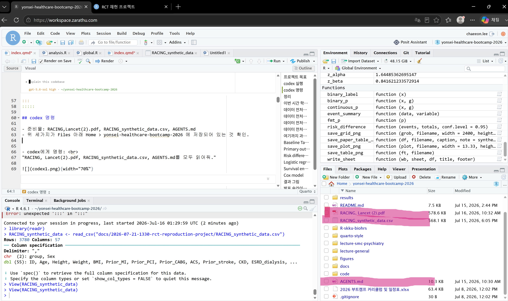
[codex에게 명령]
- “RACING, Lancet(2).pdf, RACING_synthetic_data.csv, AGENTS.md를 모두 읽어줘.”
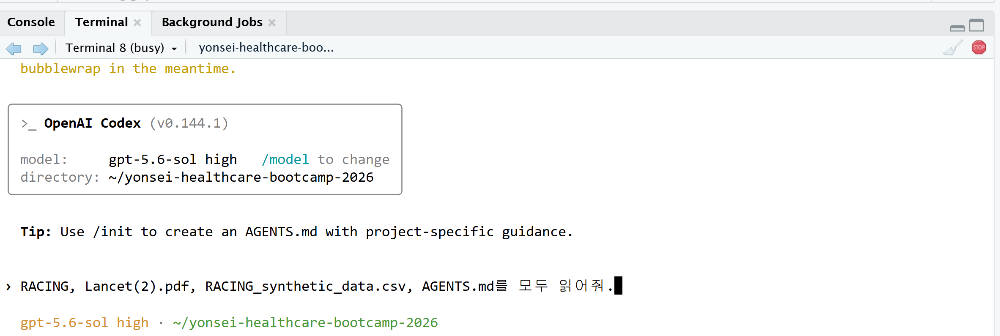
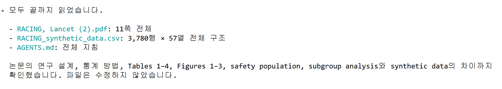
codex 명령
[codex 명령]
- “csv 파일과 AGENTS.md를 참고해서 RACING 논문 PDF처럼 분석해줘. 최종적으로 RACING 논문 내 모든 figures(1~3)와 tables(1~4)을 재현하고 싶어.”
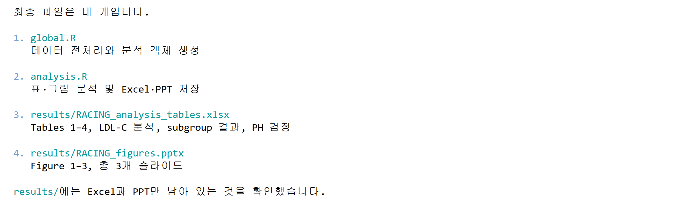
주의사항
- codex가 임의로 PNG, CSV, TXT, MD 파일을 만드는 경우가 있다. 이때 codex에게 불필요한 (내가 명시적으로 지시하지 않은) 파일과 생성코드를 모두 제거하도록 시킨다.
- “global.R, analysis.R, Figures.pptx, Tables.xlsx가 아닌 불필요한 문서는 모두 제거해줘.”
codex 실행 결과 정리
codex를 이용하여 4개의 문서를 생성했음.
- global.R
- analysis.R
- Figures.pptx
- Tables.pptx
저번 시간 review
global.R은 데이터 전처리와 분석 준비하는 문서
analysis.R은 실제 분석과 결과물 생성하는 문서
표와 그림
Figures와 Tables는 RACING synthetic data를 가지고 논문의 표와 그림을 재현했음.
(synthetic data는 실제 RACING 논문을 최대한 모방한 데이터이기 때문에 결과가 비슷하지만 아예 일치하지는 않음.)
결과 확인하기
Global.R
global.R의 핵심 코드 이해하기
Analysis.R
global.R의 핵심 코드 이해하기
tables
출력된 Tables 표 확인하기
figures
출력된 Figures 그림 확인하기
global.R
global.R 요약
global.R은 RACING 합성 데이터를 불러와 분석에 필요한 형태로 정리하는 파일이다.
변수들의 자료형을 맞추고 분석 목적별 변수 목록을 구성해 최종 분석 데이터 out을 만들고, 결과표용 라벨 out.label도 함께 생성한다.
analysis.R
# ─────────────────────────────────────
# 1. 기저 특성 Table 1 만들기
# ─────────────────────────────────────
table1_vars <- c(
"Age", "Sex", "BMI",
"Prior_MI", "Prior_stroke",
"CKD", "Hypertension", "Diabetes",
"Smoking", "Baseline_LDL"
)
table1_factor_vars <- c(
"Sex", "Prior_MI", "Prior_stroke",
"CKD", "Hypertension", "Diabetes", "Smoking"
)
table1 <- jstable::CreateTableOneJS(
vars = table1_vars,
strata = "group",
data = out,
factorVars = table1_factor_vars,
test = TRUE,
showAllLevels = TRUE,
Labels = TRUE,
labeldata = out.label,
nonnormal = "Baseline_LDL"
)$table
# 행 이름을 Variable 열로 추가
table1 <- cbind(
Variable = rownames(table1),
table1
)
# 검정 방법 등 불필요한 열 제거
remove_cols <- intersect(
c("test", "sig"),
colnames(table1)
)
table1 <- table1[
,
setdiff(colnames(table1), remove_cols),
drop = FALSE
]
table1
# ─────────────────────────────────────
# 2. 일차 평가변수 누적발생률 그림
# ─────────────────────────────────────
primary_data <- out[, .(
group,
time = primary_followup_mo,
event = as.integer(as.character(primary_event))
)]
# Kaplan–Meier 모형 적합
km_fit <- survival::survfit(
survival::Surv(time, event) ~ group,
data = primary_data
)
# 생존확률을 누적발생률 1-S(t)로 변환
km_summary <- summary(km_fit)
km_data <- data.table(
time = km_summary$time / 12,
cumulative_incidence = 1 - km_summary$surv,
group = sub("^group=", "", km_summary$strata)
)
# 각 치료군의 시작점을 추가
km_data <- rbind(
data.table(
time = 0,
cumulative_incidence = 0,
group = group_levels
),
km_data
)
km_data[, group := factor(
group,
levels = group_levels
)]
# 누적발생률 그림
primary_plot <- ggplot(
km_data,
aes(
x = time,
y = cumulative_incidence,
colour = group
)
) +
geom_step(linewidth = 1.1) +
scale_y_continuous(
labels = scales::percent_format()
) +
labs(
x = "Time since randomisation, years",
y = "Cumulative incidence",
colour = NULL
) +
theme_minimal()
primary_plot
# ─────────────────────────────────────
# 3. 비열등성 확인
# ─────────────────────────────────────
primary_summary <- primary_data[, .(
N = .N,
Events = sum(event),
Event_rate = mean(event)
), by = group]
# 두 치료군의 절대위험도 차이와 90% 신뢰구간
ni_fit <- prop.test(
x = primary_summary$Events,
n = primary_summary$N,
conf.level = 0.90,
correct = FALSE
)
risk_difference <- (
primary_summary$Event_rate[1] -
primary_summary$Event_rate[2]
)
ni_result <- data.table(
Risk_difference = risk_difference,
Lower_90CI = ni_fit$conf.int[1],
Upper_90CI = ni_fit$conf.int[2],
Noninferiority_margin = 0.02,
Noninferior = ni_fit$conf.int[2] < 0.02
)
ni_result
# ─────────────────────────────────────
# 4. Cox 비례위험 모형
# ─────────────────────────────────────
# 단독요법군을 기준군으로 지정
primary_data[, group_cox := relevel(
group,
ref = group_levels[2]
)]
cox_fit <- survival::coxph(
survival::Surv(time, event) ~ group_cox,
data = primary_data
)
cox_summary <- summary(cox_fit)
# HR, 95% 신뢰구간, p값 정리
cox_result <- data.table(
HR = cox_summary$conf.int[1, "exp(coef)"],
Lower_95CI = cox_summary$conf.int[1, "lower .95"],
Upper_95CI = cox_summary$conf.int[1, "upper .95"],
P_value = cox_summary$coefficients[1, "Pr(>|z|)"]
)
cox_result
# ─────────────────────────────────────
# 5. PH 가정 확인
# ─────────────────────────────────────
ph_test <- survival::cox.zph(
cox_fit,
transform = "identity"
)
ph_test
# PH 가정 진단 그림
plot(ph_test)analysis.R 요약
analysis.R은 global.R에서 정리한 데이터를 사용해 RACING 논문의 주요 분석을 재현하는 파일이다.
치료군별 기저 특성, 임상 평가변수, LDL-C 목표 달성률, 안전성 결과를 Tables로 만들고,
연구 대상자 흐름도, 일차 평가변수 누적발생률, subgroup analysis는 Figures로 만든다.
일차 평가변수의 비열등성, Cox 모형과 PH 가정을 확인하며,
최종 Tables는 Excel로, Figures은 PPT로 저장한다.
Table 1_치료군별 기저 특성
codex가 만든 표와 그림은 개인마다 조금씩 다르게 나타날 수 있다. 형식보다는 내용에 집중하자.
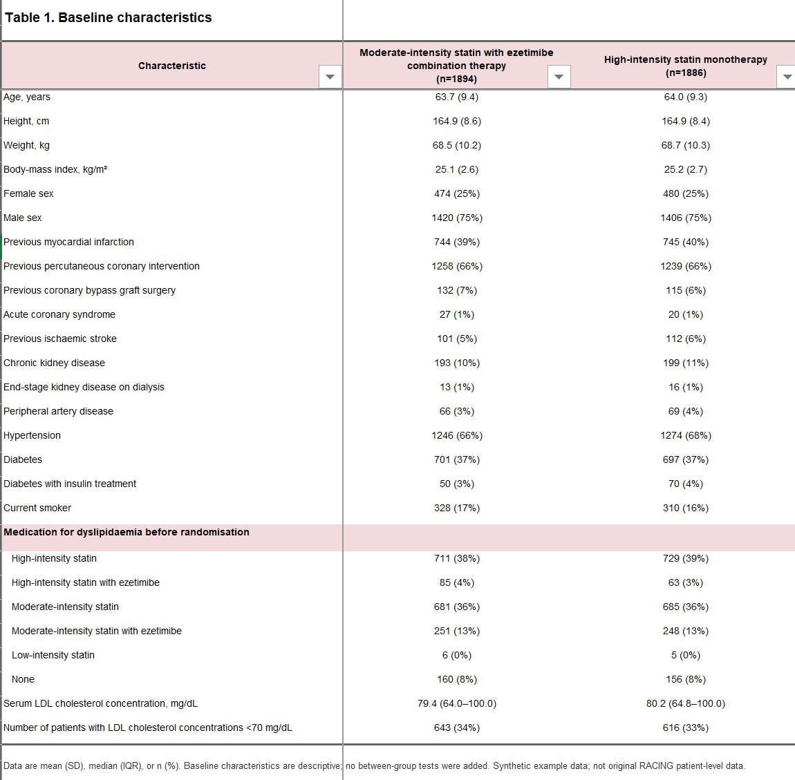
[Table 1 설명]
- 무작위 배정된 환자의 연령, 성별, BMI, 과거력, 기저 LDL-C 및 기존 치료제 사용현황을 치료군별로 정리한 표이다.
- 두 치료군에 균등하게 분배되었으며 randomization이 잘 이루어진 것을 확인할 수 있다.
- diabetes나 LDL 수치 고위험군 환자들 수도 균등한 것으로 보아 층화 랜덤도 잘 이루어진 것을 확인할 수 있다.
Table 2_ 3년 임상 평가변수
codex가 만든 표와 그림은 개인마다 조금씩 다르게 나타날 수 있다. 형식보다는 내용에 집중하자.
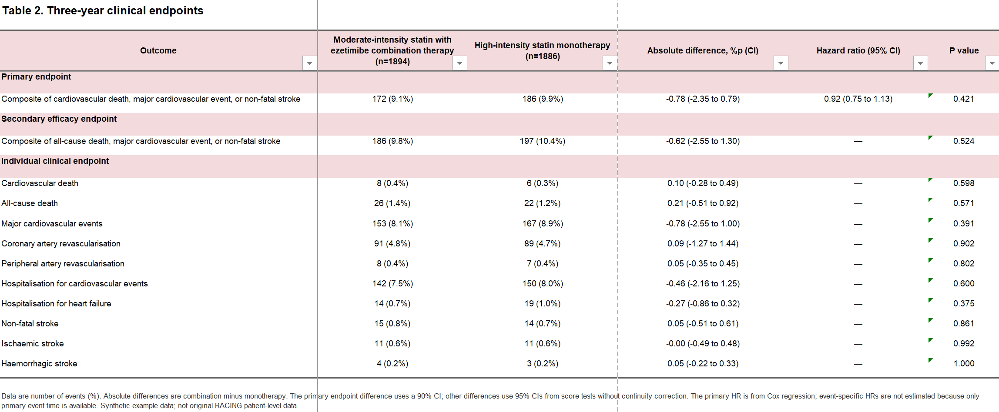
[RCT란? RACING Trial으로 배우는 RCT 복습]
- 병합요법군과 단독요법군의 risk difference는 -0.78.
- 위험도 차이의 90% CI는 (-2.35 , 0.79).
- 신뢰구간 상한선 0.79 < 실험에서 사전에 정한 비열등성 마진 2.0보다 작기 때문에 비열등성 입증함.
[Table2 설명]
- 일차 평가변수와 세부 임상 사건의 발생률을 치료군별로 비교한 표이다. 사건 발생률, 절대위험도 차이, 위험비와 신뢰구간을 제시한 표이다.
- 일차 평가변수 예방 효과 면에서 병합요법군이 단독요법군에 비열등하다는 것을 확인할 수 있다.
Table 3_ LDL-C < 70mg/dL 달성 결과
codex가 만든 표와 그림은 개인마다 조금씩 다르게 나타날 수 있다. 형식보다는 내용에 집중하자.
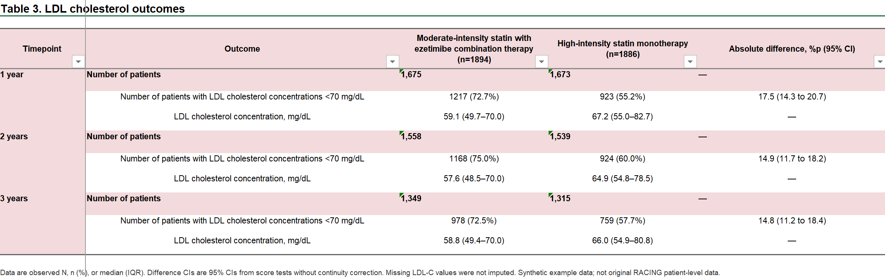
[Table 3 설명]
- 1년, 2년, 3년 시점의 LDL-C 측정 인원과 LDL-C <70 mg/dL 달성률을 치료군별로 비교한 표이다.
- 지질 조절 효과 면에서 병합요법군이 단독요법군보다 유의하게 우월하다는 것을 확인할 수 있다.
Table 4_ 안전성 평가 변수
codex가 만든 표와 그림은 개인마다 조금씩 다르게 나타날 수 있다. 형식보다는 내용에 집중하자.
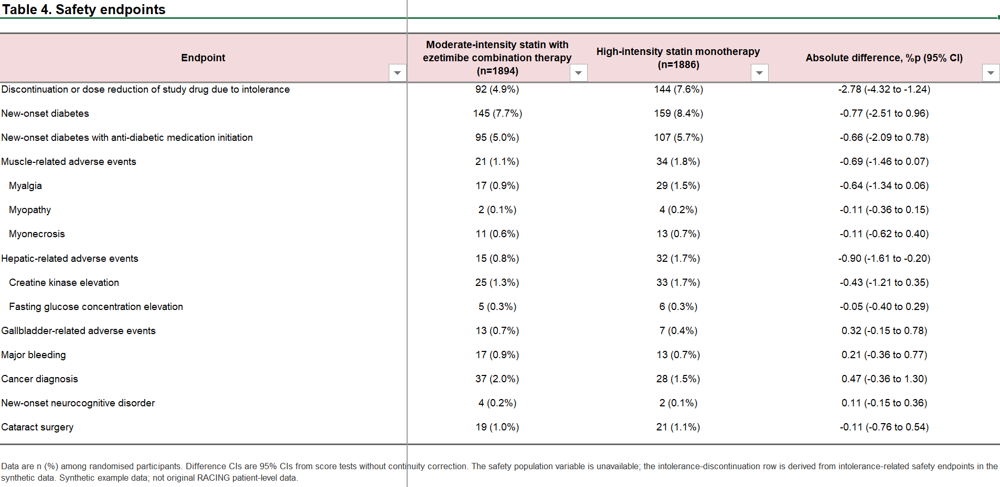
[Table 4 설명]
- 무작위 배정 환자 전체를 대상으로 치료군별 안전성 사건 발생률을 비교한 표이다.
- synthetic data에서 약제 중단/감량 값이 존재하지 않아 대신 안전성 사건을 묶어 파생 변수로 분석을 진행했다.
- 약제 불내성으로 인한 중단 혹은 감량은 병합요법군에서 더 적게 일어났지만, 병합요법군이 유의하게 우월하다고 보기는 어렵다.
Figure 1_ 연구 대상자 흐름
codex가 만든 표와 그림은 개인마다 조금씩 다르게 나타날 수 있다. 형식보다는 내용에 집중하자.
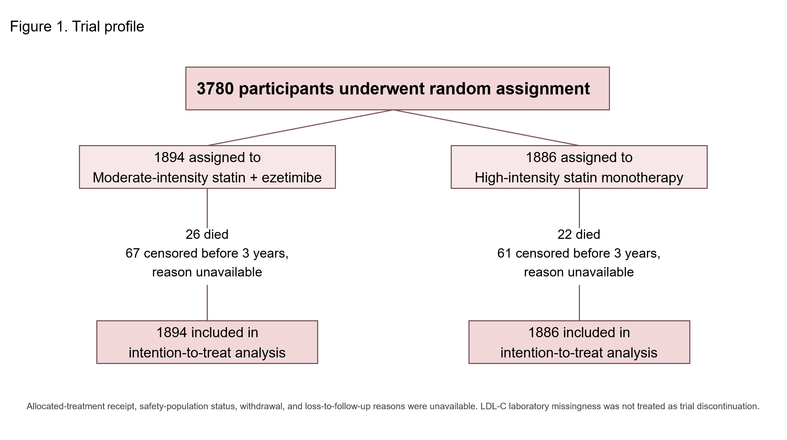
[Figure 1 설명]
- 총 3,780명의 무작위 배정과 치료군별 배정 현황, 사망, 3년 이전 돌연 중단 및 intention-to-treat 분석 포함 인원을 나타낸 그림이다.
- 두 군에 인원이 균등하게 분배된 것을 확인할 수 있다.
Figure 2_ 일차 평가변수 누적 발생률 (K-M 곡선)
codex가 만든 표와 그림은 개인마다 조금씩 다르게 나타날 수 있다. 형식보다는 내용에 집중하자.
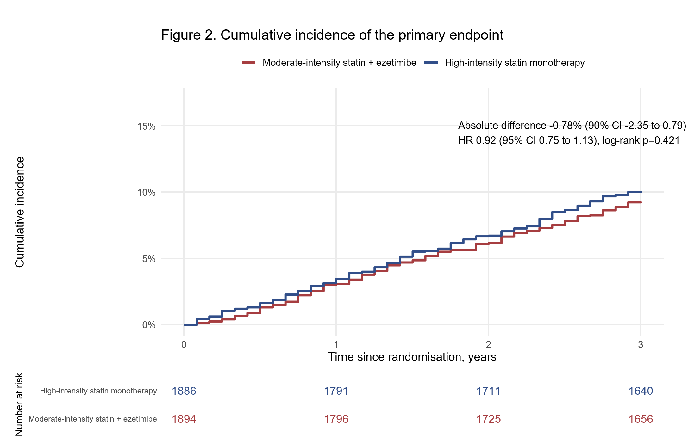
[Figure 2 설명]
- 무작위 배정 이후 3년 동안 일차 평가변수의 누적발생률을 치료군별로 비교한 그림이다.
- 단순 사건 발생뿐 아니라 사건이 언제 발생했는지까지 확인할 수 있다.
- 두 그래프가 비슷하게 움직이는 것으로 보아 병합요법군이 단독요법군에 일차 평가변수 발생률 면에서 비열등한 것을 확인할 수 있다.
Figure 3_ Subgroup analysis forest plot
codex가 만든 표와 그림은 개인마다 조금씩 다르게 나타날 수 있다. 형식보다는 내용에 집중하자.
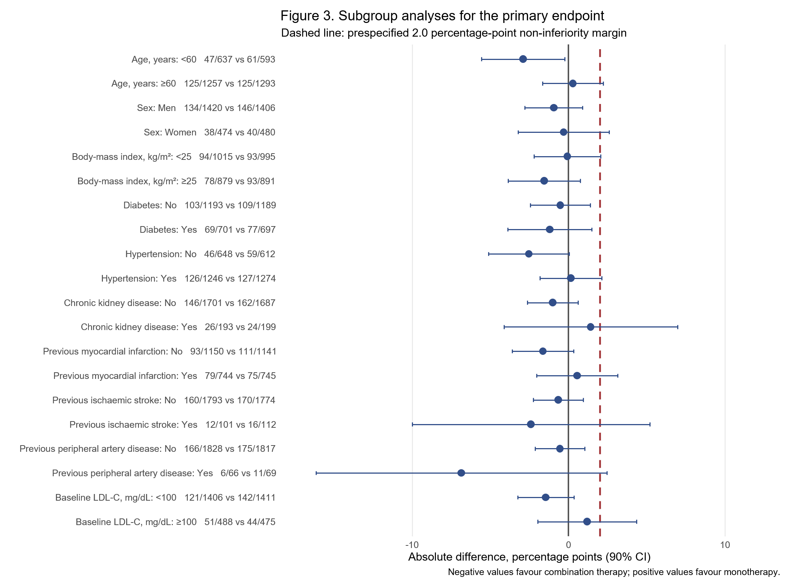
[Figure 3 설명]
- 하위 집단별 일차 평가변수의 절대위험도 차이와 90% 신뢰구간을 나타낸 그림이다. 붉은 점선은 비열등성 한계인 2.0%p이다.
- 하위 집단별로 두 치료요법 사이에 유의한 차이가 있다고 보기 어렵다.
Zarathu Co., Ltd.